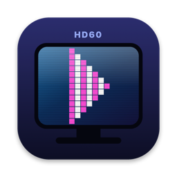

Projects
Things I've built, mostly to scratch an itch
InterLude
Plays BBC radio to my Mac, a browser, or Chromecast and Sonos speakers and quietly mutes the news bulletins, or cuts them out of programmes from the last 30 days. Runs as a menu bar app or on a Linux server, with a remote for your phone.
Read more →
HD60 Pro for macOS
A DriverKit driver and player that make Elgato's HD60 Pro capture card work on Apple Silicon Macs, a card Elgato never wrote a Mac driver for.
Read more →